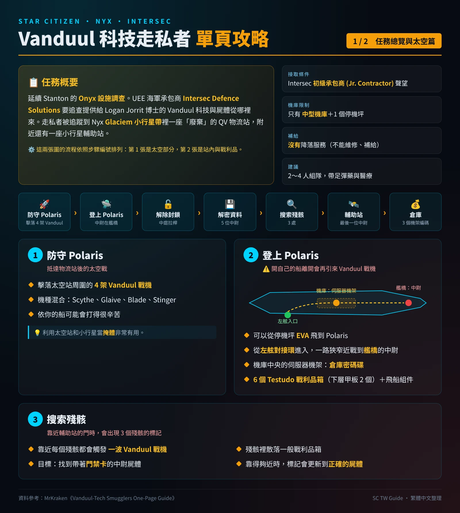
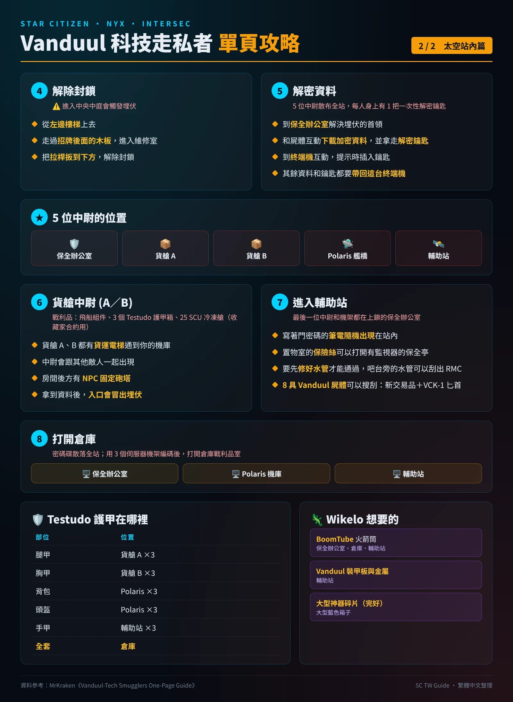

Vanduul 科技走私者
Intersec Defence Solutions 的調查任務：在 Nyx 的廢棄 QV 物流站追查 Vanduul 科技的來源。
👾 任務簡介
延續 Stanton 的 Onyx 設施調查，UEE 海軍承包商 Intersec Defence Solutions 正在追查 Vanduul 科技與遺體的來源。走私者被追蹤到 Nyx 星系 Glaciem 小行星帶的一座「廢棄」QV 物流站，旁邊還有一座輔助站小行星基地。
- 接取條件：Intersec 聲望達到 Junior Contractor（初級承包商），任務會出現在 mobiGlas 的 Investigation 分頁。
- 太空戰 + FPS：一開始要先打 Vanduul 戰機，之後是大量室內近戰。
- 戰利品豐富：Testudo 護甲、BoomTube 火箭筒、UCK-1 刀，以及 Wikelo 要的 Vanduul 材料。
- 這條任務線也是 4.10.3 Vanduul 入侵 任務的前置條件。
🧭 任務流程
保衛 Polaris
抵達時先擊落 4 架 Vanduul 戰機（Scythe、Glaive、Blade、Stinger 混編）。依你的船不同可能很硬，可以利用太空站和小行星當掩護。
解除封鎖
從左邊樓梯上去，走過招牌後面的木板進入維修室，把拉桿扳到下方。注意：進入中央大廳會觸發伏擊。
解密資料
共有 5 名副官，每人身上有一次性解密鑰匙，分別在保全室、A 貨艙、B 貨艙、Polaris、輔助站。先到保全室解決伏擊首領，對屍體互動下載加密資料、拿走鑰匙，到終端機插入鑰匙。所有資料和鑰匙最後都要帶回這台終端機。
清理貨艙
A、B 兩個貨艙都有副官和小兵，後方有 NPC 砲塔。貨艙內有船艦組件、3 個 Testudo 護甲箱、20 個冷凍艙（可給 Collector 任務）。兩個貨艙都有貨梯直通你的機庫。拿到資料時入口會刷出伏擊。
登上 Polaris
開船離開時會再出現一波 Vanduul 戰機。從左舷對接口進入，一路近戰打到艦橋找副官。機庫中央的伺服器架可以拿倉庫通行碟。這裡有 6 個 Testudo 護甲箱（下層 2 個）與船艦組件。
搜索殘骸
靠近每個殘骸點都會觸發一波 Vanduul 戰機。在殘骸中找到身上有通行卡的副官屍體，靠近正確屍體時標記會更新。
進入輔助站
最後一名副官和通行碟伺服器架在密碼鎖保全室。門的密碼在隨機位置的筆電上；用 Cambio 把置物室的保險絲裝好進入保全亭；管線壞掉要修，可以刮吧台旁邊的管線取得修理材料 (RMC)。這裡有 8 具可搜刮的 Vanduul 屍體（新交易材料與 UCK-1 刀）。
打開倉庫
用分別在保全室、Polaris、輔助站的 3 個伺服器架把通行碟編碼，就能打開倉庫的戰利品室，裡面有整套 Testudo 護甲。
🛡️ Testudo 護甲位置
| 部位 | 位置 |
|---|---|
| 腿部 (Legs) | A 貨艙 ×3 |
| 胸甲 (Chest) | B 貨艙 ×3 |
| 背包 (Backpack) | Polaris ×3 |
| 頭盔 (Helmet) | Polaris ×3 |
| 手臂 (Arms) | 輔助站 ×3 |
| 整套 (Full set) | 倉庫 |
🦎 Wikelo 想要的東西
| 物品 | 位置 | 用途 |
|---|---|---|
| BoomTube 火箭筒 | 保全室、倉庫、輔助站 | Wikelo 交易 |
| Vanduul Plating／Metal | 輔助站的 Vanduul 屍體 | Wolf 隱形版、Guardian MX、Meteor 等交易 |
| Large Artifact Fragment (Pristine) | 大型藍色箱子 | 多種船艦交易 |
交易內容請看 Wikelo 交易攻略。
🗺️ 中文攻略圖
依照 MrKraken 單頁攻略的架構重新整理成兩張繁體中文圖：第 1 張是任務總覽與太空部分，第 2 張是站內流程與戰利品。點擊圖片可以放大。


💡 小提醒
- 船的強弱對難度影響很大，太空戰時多利用掩護。
- 隔一段時間回來，或伏擊門重新觸發時，敵人可能會重生。
- 回程經過的倉庫沒有敵人，可以放心搬戰利品。
- 這條任務線有時會有 BUG，卡關時可以放棄重接或換伺服器。
🗺️ 地圖與圖片來源
本頁中文攻略圖由本站依照 MrKraken 的 Vanduul-Tech Smugglers One-Page Guide（RSI Community Hub）架構重新製作，攻略內容整理自原作者，影片攻略：YouTube。遊戲畫面與素材版權歸 Cloud Imperium Games 所有。